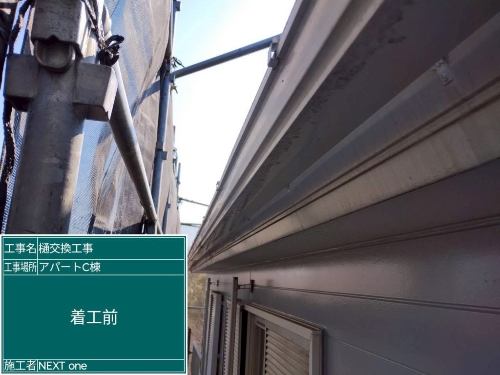
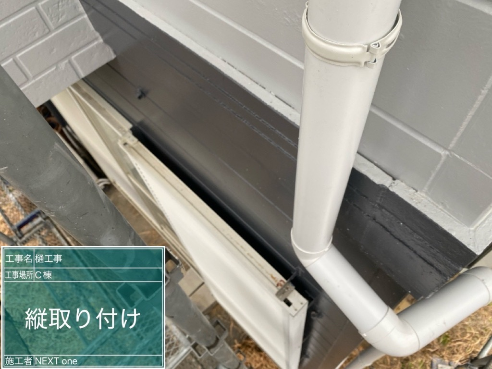
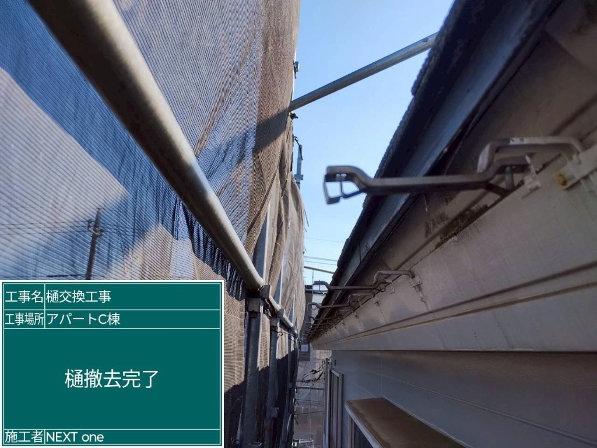
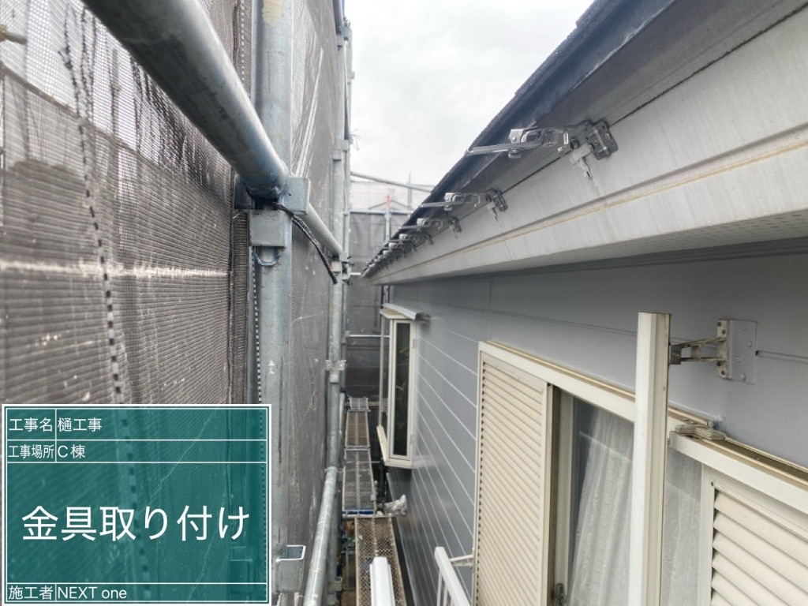
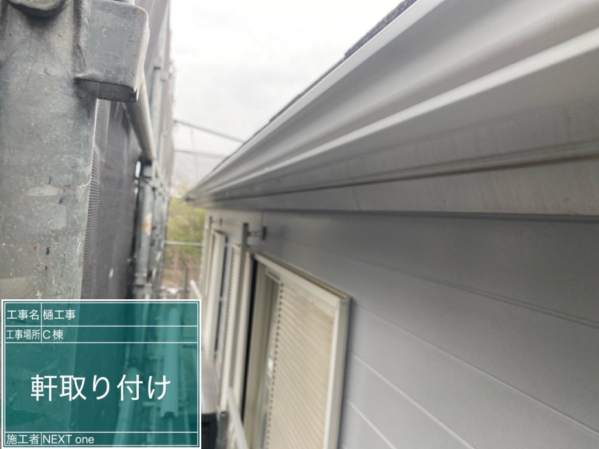

事例35: 雨樋交換で雨水トラブル解消！横浜市青葉区・築15年のお宅
📍 横浜市青葉区 K様






🔍 症状
インターネットでご相談を頂いた横浜市青葉区のお客様。「雨樋から水が溢れて、外壁が濡れてしまっている」とのことで、現地調査にお伺いしました。
築15年で、雨樋の継ぎ目部分から水漏れが発生しており、雨樋本体にもひび割れや歪みが複数箇所確認できました。オーバーフローした雨水が外壁を直撃している状態で、このまま放置すると外壁の劣化や雨漏りの原因になる可能性がありました。
⚠️ 原因
経年劣化による雨樋の変形とひび割れが主な原因でした。
15年間の紫外線や風雨にさらされたことで、雨樋の継ぎ目部分が劣化し、水漏れが発生。また、雨樋本体も歪んでいたため、正常に排水ができない状態になっていました。
🔨 工事内容
- 既存雨樋の撤去
- 新規雨樋の取り付け（高耐久性）
- 排水経路の改善
- 足場設置・解体
💰 費用（税込）
49万円
※ 足場費用含む
📅 工期
2日間
足場設置から完了まで
✨ ポイント
【1. 足場を組んでの全交換】
雨樋は高所にあるため、安全に作業を行うために足場を組みました。足場があることで、丁寧かつ正確な施工が可能になります。
【2. 耐久性の高い雨樋を使用】
15年前の雨樋と比べて、現在の雨樋は耐久性が大幅に向上しています。今回は、変形しにくく、紫外線にも強い高品質な雨樋を使用しました。
【3. 排水経路の見直し】
単に交換するだけでなく、雨水の流れをしっかり確認し、詰まりにくい構造に改善しました。
【4. 一級建築士による確認】
当社には一級建築士が在籍しているため、構造的な問題がないかもしっかりチェックした上で施工を行いました。
工期2日間でスムーズに完了し、お客様の生活への影響を最小限に抑えることができました。
💬 お客様の声
「インターネットで検索して、こちらの会社を見つけました。女性の社長さんが対応してくださるということで、安心してお願いできました。
雨樋の水漏れが気になっていたのですが、まさかここまで劣化しているとは思っていませんでした。現地調査の際に、丁寧に状況を説明してくださり、『このまま放置すると外壁にも影響が出る可能性があります』とアドバイスを頂いたので、すぐに工事をお願いすることにしました。
工事も2日間で終わり、とてもスムーズでした。職人さんたちも丁寧で、作業後の清掃もしっかりしてくださいました。
何より、工事後に社長さんが訪問してくださって、『何か問題があればすぐに連絡してくださいね』と声をかけてくださったのが嬉しかったです。これで安心して雨の日を迎えられます。本当にありがとうございました！」
- 横浜市青葉区 K様・50代女性